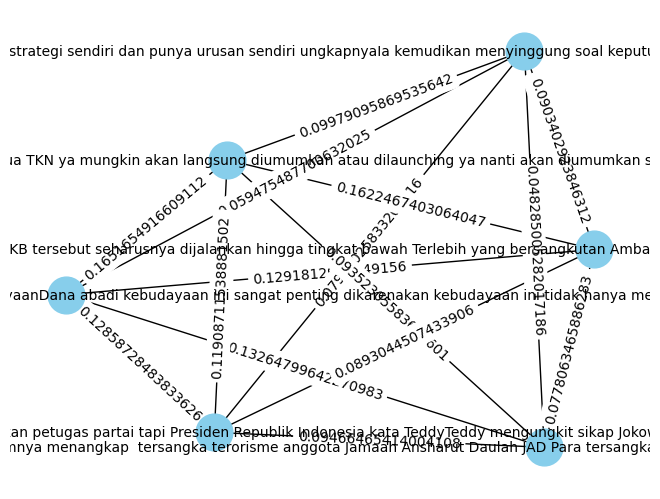

COSINUS SIMILARITY#
import requests as req
from bs4 import BeautifulSoup as bs
from datetime import datetime
import csv
hades = {'user-agent': 'Mozilla/5.0 (Windows NT 10.0; Win64; x64) AppleWebKit/537.36 (KHTML, like Gecko) Chrome/106.0.0.0 Safari/537.36'}
from google.colab import drive
drive.mount('/content/drive')
---------------------------------------------------------------------------
KeyboardInterrupt Traceback (most recent call last)
<ipython-input-2-d5df0069828e> in <cell line: 2>()
1 from google.colab import drive
----> 2 drive.mount('/content/drive')
/usr/local/lib/python3.10/dist-packages/google/colab/drive.py in mount(mountpoint, force_remount, timeout_ms, readonly)
101 def mount(mountpoint, force_remount=False, timeout_ms=120000, readonly=False):
102 """Mount your Google Drive at the specified mountpoint path."""
--> 103 return _mount(
104 mountpoint,
105 force_remount=force_remount,
/usr/local/lib/python3.10/dist-packages/google/colab/drive.py in _mount(mountpoint, force_remount, timeout_ms, ephemeral, readonly)
130 )
131 if ephemeral:
--> 132 _message.blocking_request(
133 'request_auth', request={'authType': 'dfs_ephemeral'}, timeout_sec=None
134 )
/usr/local/lib/python3.10/dist-packages/google/colab/_message.py in blocking_request(request_type, request, timeout_sec, parent)
174 request_type, request, parent=parent, expect_reply=True
175 )
--> 176 return read_reply_from_input(request_id, timeout_sec)
/usr/local/lib/python3.10/dist-packages/google/colab/_message.py in read_reply_from_input(message_id, timeout_sec)
94 reply = _read_next_input_message()
95 if reply == _NOT_READY or not isinstance(reply, dict):
---> 96 time.sleep(0.025)
97 continue
98 if (
KeyboardInterrupt:
import csv
# Tulis header ke file CSV
with open('politik.csv', 'w', newline='') as file:
wr = csv.writer(file, delimiter=',')
# Definisikan header sesuai dengan nama kolom yang Anda inginkan
header = ['Headline', 'Link', 'Content']
wr.writerow(header)
def scrape_detik(hal):
global hades
a = 1
for page in range(1,hal):
url = f'https://www.detik.com/search/searchnews?query=pemilu+2024&sortby=time&page={page}'
ge = req.get(url,hades).text
sop = bs(ge,'lxml')
li = sop.find('div',class_='list media_rows list-berita')
lin = li.find_all('article')
for x in lin:
link = x.find('a')['href']
# date = x.find('a').find('span',class_='date').text.replace('WIB','').replace('detikNews','').split(',')[1]
headline = x.find('a').find('h2').text
ge_ = req.get(link,hades).text
sop_ = bs(ge_,'lxml')
content = sop_.find_all('div',class_='detail__body-text itp_bodycontent')
for x in content:
x = x.find_all('p')
y = [y.text for y in x ]
content_ = ''.join(y).replace('\n', '').replace('ADVERTISEMENT','').replace('SCROLL TO RESUME CONTENT','')
print(f'done[{a}] > {headline[0:10]}')
a += 1
with open('politik.csv','a')as file:
wr = csv.writer(file, delimiter=',')
wr.writerow([headline,link,content_])
scrape_detik(3)
done[1] > Relawan KI
done[2] > Isu Kartu
done[3] > Kapan Peng
done[4] > Partai Gar
done[5] > Heboh Ketu
done[6] > Densus 88
done[7] > Balasan Go
done[8] > Legislator
done[9] > 4 Nama Men
done[10] > Pesan Legi
done[11] > Tanda Tany
done[12] > Harun Masi
done[13] > Golkar Opt
done[14] > Ajaib Ajak
done[15] > Namanya Sa
done[16] > PAN Yakin
import pandas as pd
df = pd.read_csv('/content/politik.csv')
df
| Headline | Link | Content | |
|---|---|---|---|
| 0 | Relawan KIP Ponorogo Deklarasi Dukungan Prabow... | https://news.detik.com/pemilu/d-7015137/relawa... | Relawan Komite Independen Pemenangan (KIP) Pra... |
| 1 | Isu Kartu Truf, PPP Heran Nusron Ungkit Ganti ... | https://news.detik.com/pemilu/d-7015112/isu-ka... | Juru bicara PPP Achmad Baidowi (Awiek) merespo... |
| 2 | Kapan Pengumuman TKN Prabowo-Gibran? Ini Jawab... | https://news.detik.com/berita/d-7015092/kapan-... | Ketua Harian DPP Partai Gerindra Dasco mengata... |
| 3 | Partai Garuda: Kasihan Jokowi, Bersikap Netral... | https://news.detik.com/pemilu/d-7014992/partai... | Partai Garuda menyebut banyak fitnah yang ditu... |
| 4 | Heboh Ketua DPAC PKB Dipecat karena Dukung-Pas... | https://www.detik.com/bali/berita/d-7014904/he... | Ambar Purwoko dipecat dari jabatan Ketua Dewan... |
| 5 | Densus 88 Sebut Tindak Pidana Terorisme Turun ... | https://news.detik.com/berita/d-7014872/densus... | Densus 88 Antiteror Polri mengatakan tindak pi... |
| 6 | Balasan Golkar soal Gibran Usai PDIP Singgung ... | https://news.detik.com/pemilu/d-7014852/balasa... | PDIP bicara 'penzaliman' jika pihaknya memecat... |
| 7 | Legislator Golkar Yakin dengan Kemampuan Calon... | https://news.detik.com/pemilu/d-7014821/legisl... | Presiden Joko Widodo (Jokowi) memilih KSAD Jen... |
| 8 | 4 Nama Mencuat Jadi Ketua Tim Prabowo-Gibran d... | https://www.detik.com/sulsel/berita/d-7014816/... | Sejumlah nama mulai mencuat untuk menjadi calo... |
| 9 | Pesan Legislator Demokrat ke Calon Panglima TN... | https://news.detik.com/pemilu/d-7014798/pesan-... | Anggota Komisi I DPR RI dari Fraksi Partai Dem... |
| 10 | Tanda Tanya Nama Khofifah Ya atau Tidak Masuk ... | https://www.detik.com/jatim/berita/d-7014700/t... | Ketua Tim Kampanye Nasional (TKN) Prabowo Subi... |
| 11 | Harun Masiku Belum Tertangkap, Pukat UGM Ungki... | https://news.detik.com/berita/d-7014744/harun-... | Pusat Kajian Anti Korupsi (Pukat) UGM menyorot... |
| 12 | Golkar Optimis RK Bakal Menangkan Prabowo-Gibr... | https://news.detik.com/pemilu/d-7014612/golkar... | Ketua Bappilu Partai Golkar Maman Abdurahman m... |
| 13 | Ajaib Ajak Investor Manfaatkan Peluang Saham &... | https://finance.detik.com/fintech/d-7014610/aj... | Ajaib mengajak para retail memanfaatkan peluan... |
| 14 | Namanya Santer Masuk TKN Prabowo-Gibran, Khofi... | https://www.detik.com/jatim/berita/d-7014583/n... | Gubernur Jatim Khofifah Indar Parawansa buka s... |
| 15 | PAN Yakin TNI Tetap Netral di Pemilu Meski Ada... | https://news.detik.com/pemilu/d-7014598/pan-ya... | Anggota Komisi I DPR RI Fraksi PAN Ahmad Rizki... |
df = df.dropna()
df.isnull().sum()
Headline 0
Link 0
Content 0
dtype: int64
!pip install Sastrawi
Requirement already satisfied: Sastrawi in /usr/local/lib/python3.10/dist-packages (1.0.1)
from nltk.tokenize import word_tokenize
from nltk.corpus import stopwords
from sklearn.feature_extraction.text import TfidfVectorizer
from sklearn.feature_extraction.text import CountVectorizer
from Sastrawi.Stemmer.StemmerFactory import StemmerFactory
import warnings
import pandas as pd
import numpy as np
import nltk
import re
import csv
nltk.download('stopwords')
nltk.download('punkt')
warnings.filterwarnings('ignore')
[nltk_data] Downloading package stopwords to /root/nltk_data...
[nltk_data] Package stopwords is already up-to-date!
[nltk_data] Downloading package punkt to /root/nltk_data...
[nltk_data] Package punkt is already up-to-date!
import pandas as pd
df = pd.read_csv('/content/politik.csv')
df
| Headline | Link | Content | |
|---|---|---|---|
| 0 | Relawan KIP Ponorogo Deklarasi Dukungan Prabow... | https://news.detik.com/pemilu/d-7015137/relawa... | Relawan Komite Independen Pemenangan (KIP) Pra... |
| 1 | Isu Kartu Truf, PPP Heran Nusron Ungkit Ganti ... | https://news.detik.com/pemilu/d-7015112/isu-ka... | Juru bicara PPP Achmad Baidowi (Awiek) merespo... |
| 2 | Kapan Pengumuman TKN Prabowo-Gibran? Ini Jawab... | https://news.detik.com/berita/d-7015092/kapan-... | Ketua Harian DPP Partai Gerindra Dasco mengata... |
| 3 | Partai Garuda: Kasihan Jokowi, Bersikap Netral... | https://news.detik.com/pemilu/d-7014992/partai... | Partai Garuda menyebut banyak fitnah yang ditu... |
| 4 | Heboh Ketua DPAC PKB Dipecat karena Dukung-Pas... | https://www.detik.com/bali/berita/d-7014904/he... | Ambar Purwoko dipecat dari jabatan Ketua Dewan... |
| 5 | Densus 88 Sebut Tindak Pidana Terorisme Turun ... | https://news.detik.com/berita/d-7014872/densus... | Densus 88 Antiteror Polri mengatakan tindak pi... |
| 6 | Balasan Golkar soal Gibran Usai PDIP Singgung ... | https://news.detik.com/pemilu/d-7014852/balasa... | PDIP bicara 'penzaliman' jika pihaknya memecat... |
| 7 | Legislator Golkar Yakin dengan Kemampuan Calon... | https://news.detik.com/pemilu/d-7014821/legisl... | Presiden Joko Widodo (Jokowi) memilih KSAD Jen... |
| 8 | 4 Nama Mencuat Jadi Ketua Tim Prabowo-Gibran d... | https://www.detik.com/sulsel/berita/d-7014816/... | Sejumlah nama mulai mencuat untuk menjadi calo... |
| 9 | Pesan Legislator Demokrat ke Calon Panglima TN... | https://news.detik.com/pemilu/d-7014798/pesan-... | Anggota Komisi I DPR RI dari Fraksi Partai Dem... |
| 10 | Tanda Tanya Nama Khofifah Ya atau Tidak Masuk ... | https://www.detik.com/jatim/berita/d-7014700/t... | Ketua Tim Kampanye Nasional (TKN) Prabowo Subi... |
| 11 | Harun Masiku Belum Tertangkap, Pukat UGM Ungki... | https://news.detik.com/berita/d-7014744/harun-... | Pusat Kajian Anti Korupsi (Pukat) UGM menyorot... |
| 12 | Golkar Optimis RK Bakal Menangkan Prabowo-Gibr... | https://news.detik.com/pemilu/d-7014612/golkar... | Ketua Bappilu Partai Golkar Maman Abdurahman m... |
| 13 | Ajaib Ajak Investor Manfaatkan Peluang Saham &... | https://finance.detik.com/fintech/d-7014610/aj... | Ajaib mengajak para retail memanfaatkan peluan... |
| 14 | Namanya Santer Masuk TKN Prabowo-Gibran, Khofi... | https://www.detik.com/jatim/berita/d-7014583/n... | Gubernur Jatim Khofifah Indar Parawansa buka s... |
| 15 | PAN Yakin TNI Tetap Netral di Pemilu Meski Ada... | https://news.detik.com/pemilu/d-7014598/pan-ya... | Anggota Komisi I DPR RI Fraksi PAN Ahmad Rizki... |
# CLEANING
# Menghapus simbol, tanda baca, karakter tertentu
def cleaning(text):
text = re.sub(r'[^a-zA-Z\s]', '', text).strip()
return text
df['Cleaning'] = df['Content'].apply(cleaning)
df['Cleaning']
0 Relawan Komite Independen Pemenangan KIP Prabo...
1 Juru bicara PPP Achmad Baidowi Awiek merespons...
2 Ketua Harian DPP Partai Gerindra Dasco mengata...
3 Partai Garuda menyebut banyak fitnah yang ditu...
4 Ambar Purwoko dipecat dari jabatan Ketua Dewan...
5 Densus Antiteror Polri mengatakan tindak pida...
6 PDIP bicara penzaliman jika pihaknya memecat G...
7 Presiden Joko Widodo Jokowi memilih KSAD Jende...
8 Sejumlah nama mulai mencuat untuk menjadi calo...
9 Anggota Komisi I DPR RI dari Fraksi Partai Dem...
10 Ketua Tim Kampanye Nasional TKN Prabowo Subian...
11 Pusat Kajian Anti Korupsi Pukat UGM menyoroti ...
12 Ketua Bappilu Partai Golkar Maman Abdurahman m...
13 Ajaib mengajak para retail memanfaatkan peluan...
14 Gubernur Jatim Khofifah Indar Parawansa buka s...
15 Anggota Komisi I DPR RI Fraksi PAN Ahmad Rizki...
Name: Cleaning, dtype: object
from nltk.tokenize import sent_tokenize
# Fungsi untuk mengekstrak artikel menjadi kalimat
def extract_sentences(article):
sentences = sent_tokenize(article)
return sentences
# Menerapkan fungsi extract_sentences ke setiap baris dalam kolom 'artikel'
df['Kalimat'] = df['Cleaning'].apply(extract_sentences)
df['Kalimat']
0 [Relawan Komite Independen Pemenangan KIP Prab...
1 [Juru bicara PPP Achmad Baidowi Awiek merespon...
2 [Ketua Harian DPP Partai Gerindra Dasco mengat...
3 [Partai Garuda menyebut banyak fitnah yang dit...
4 [Ambar Purwoko dipecat dari jabatan Ketua Dewa...
5 [Densus Antiteror Polri mengatakan tindak pid...
6 [PDIP bicara penzaliman jika pihaknya memecat ...
7 [Presiden Joko Widodo Jokowi memilih KSAD Jend...
8 [Sejumlah nama mulai mencuat untuk menjadi cal...
9 [Anggota Komisi I DPR RI dari Fraksi Partai De...
10 [Ketua Tim Kampanye Nasional TKN Prabowo Subia...
11 [Pusat Kajian Anti Korupsi Pukat UGM menyoroti...
12 [Ketua Bappilu Partai Golkar Maman Abdurahman ...
13 [Ajaib mengajak para retail memanfaatkan pelua...
14 [Gubernur Jatim Khofifah Indar Parawansa buka ...
15 [Anggota Komisi I DPR RI Fraksi PAN Ahmad Rizk...
Name: Kalimat, dtype: object
df['Kalimat'][0]
['Relawan Komite Independen Pemenangan KIP Prabowo mendeklarasikan dukungan kepada pasangan Prabowo SubiantoGibran Rakabuming Raka Adapun dukungan tersebut diberikan untuk mewujudkan kemenangan kepada pasangan tersebut di Pilpres Penasehat KIPPrabowo Fandi Utomo mengatakan dengan menyuguhkan atraksi Reog ratusan warga perwakilan kecamatan di Ponorogo menguatkan solidaritas dan semangat untuk bergerak mengajak masyarakat Ponorogo percaya dan memilih Prabowo Subianto Gibran Rakabuming Raka di Pemilu KIPPrabowo bentuk partisipasi aktif masyarakat sipil Indonesia kepada proses demokrasi dan pemilu dalam menentukan pemimpin negeri ini kata Fandi dalam keterangan tertulis Kamis \r\r\rSCROLL TO CONTINUE WITH CONTENT\rDia menegaskan dalam menentukan masa depan bangsa ini masyarakat sipil adalah subjek yang aktif untuk memperjuangkan aspirasinya dengan menentukan pilihan di Pemilu Partainya apapun untuk presiden Prabowo Subianto ungkapnyaFandi Utomo menuturkan Kabupaten Ponorogo adalah Bumi Reog yang setiap desa paling tidak memiliki grup Reog Menurutnya hanya bacapres Prabowo yang dalam visimisinya menyiapkan program untuk seni dan budaya dengan menyiapkan dana abadi kebudayaanDana abadi kebudayaan ini sangat penting dikarenakan kebudayaan ini tidak hanya menyangkut seni tari atau seni yang lain tapi juga menyangkut sistem religi sistem organisasi kemasyarakatan sistem pengetahuan bahasa kesenian sistem mata pencaharian dan sistem teknologi dan peralatan untuk itu sangat tepat pelembagaan kebudayaan ini mendapatkan program dana abadi jelasnyaFandi Utomo menegaskan kemenangan PrabowoGibran adalah kemenangan strategi kebudayaan IndonesiaSemakin kuat identitas kita di antara Bangsabangsa maka semakin kuat posisi kita di antara bangsabangsa dan Indonesia maju ditopang strategi kebudayaan yang sangat kuat jelasnyaProgram PrabowoGibran akan melakukan penyediaan dana abadi kebudayaan akan menjamin pelestarian budaya secara berkelanjutan sambungnyaSementara itu Ketua KIPPrabowo Ponorogo menyampaikan koordinator kecamatan korcam sudah siap Menurutnya mereka sudah bergerak untuk meyakinkan pada masyarakat bangsa ini bisa lebih maju dengan kepemimpinan PrabowoSosok pemimpin yang sangat dibutuhkan negeri ini adalah Pak Prabowo itulah yang menjadi masyarakat Ponorogo dari berbagai latar belakang ini bersatu dan bergerak untuk PrabowoGibran Presiden dan Wakil Presiden tutupnya']
from sklearn.feature_extraction.text import TfidfVectorizer
df['Dokumen'] = df['Kalimat'].apply(lambda sentences: ' '.join(sentences))
tfidf_vectorizer = TfidfVectorizer()
tfidf_matrix = tfidf_vectorizer.fit_transform(df['Dokumen'])
tfidf_df = pd.DataFrame(data=tfidf_matrix.toarray(), columns=tfidf_vectorizer.get_feature_names_out())
tfidf_df
| aas | abadi | abdurachman | abdurahman | acara | achmad | ada | adalah | adanya | adapun | ... | wis | with | ya | yakin | yakini | yakni | yang | yudha | yudo | zaenur | |
|---|---|---|---|---|---|---|---|---|---|---|---|---|---|---|---|---|---|---|---|---|---|
| 0 | 0.00000 | 0.194074 | 0.000000 | 0.000000 | 0.000000 | 0.000000 | 0.000000 | 0.101114 | 0.000000 | 0.048519 | ... | 0.000000 | 0.015451 | 0.000000 | 0.000000 | 0.000000 | 0.000000 | 0.108160 | 0.000000 | 0.000000 | 0.00000 |
| 1 | 0.00000 | 0.000000 | 0.000000 | 0.000000 | 0.043119 | 0.043119 | 0.061802 | 0.000000 | 0.000000 | 0.000000 | ... | 0.000000 | 0.013732 | 0.000000 | 0.000000 | 0.000000 | 0.000000 | 0.041196 | 0.000000 | 0.000000 | 0.00000 |
| 2 | 0.00000 | 0.000000 | 0.000000 | 0.000000 | 0.000000 | 0.000000 | 0.087733 | 0.000000 | 0.000000 | 0.000000 | ... | 0.000000 | 0.019493 | 0.136748 | 0.000000 | 0.000000 | 0.000000 | 0.116960 | 0.000000 | 0.000000 | 0.00000 |
| 3 | 0.00000 | 0.000000 | 0.000000 | 0.000000 | 0.000000 | 0.000000 | 0.000000 | 0.000000 | 0.000000 | 0.000000 | ... | 0.000000 | 0.014226 | 0.000000 | 0.000000 | 0.000000 | 0.000000 | 0.071130 | 0.000000 | 0.000000 | 0.00000 |
| 4 | 0.00000 | 0.000000 | 0.000000 | 0.000000 | 0.000000 | 0.000000 | 0.012890 | 0.037485 | 0.000000 | 0.000000 | ... | 0.000000 | 0.011456 | 0.000000 | 0.000000 | 0.000000 | 0.000000 | 0.068737 | 0.000000 | 0.000000 | 0.00000 |
| 5 | 0.00000 | 0.000000 | 0.000000 | 0.000000 | 0.000000 | 0.000000 | 0.033181 | 0.072368 | 0.000000 | 0.000000 | ... | 0.000000 | 0.014745 | 0.000000 | 0.000000 | 0.000000 | 0.000000 | 0.058980 | 0.000000 | 0.000000 | 0.00000 |
| 6 | 0.00000 | 0.000000 | 0.000000 | 0.000000 | 0.000000 | 0.000000 | 0.043835 | 0.000000 | 0.000000 | 0.000000 | ... | 0.000000 | 0.012986 | 0.022775 | 0.000000 | 0.000000 | 0.000000 | 0.064931 | 0.000000 | 0.000000 | 0.00000 |
| 7 | 0.00000 | 0.000000 | 0.040239 | 0.000000 | 0.000000 | 0.000000 | 0.043256 | 0.020965 | 0.000000 | 0.000000 | ... | 0.000000 | 0.012815 | 0.022474 | 0.035043 | 0.040239 | 0.000000 | 0.089703 | 0.000000 | 0.031356 | 0.00000 |
| 8 | 0.03888 | 0.000000 | 0.000000 | 0.000000 | 0.000000 | 0.000000 | 0.027864 | 0.000000 | 0.000000 | 0.000000 | ... | 0.000000 | 0.012382 | 0.000000 | 0.033860 | 0.000000 | 0.000000 | 0.049528 | 0.000000 | 0.000000 | 0.00000 |
| 9 | 0.00000 | 0.000000 | 0.000000 | 0.000000 | 0.000000 | 0.000000 | 0.083656 | 0.030409 | 0.000000 | 0.000000 | ... | 0.000000 | 0.018588 | 0.000000 | 0.000000 | 0.000000 | 0.000000 | 0.130113 | 0.000000 | 0.045482 | 0.00000 |
| 10 | 0.00000 | 0.000000 | 0.000000 | 0.000000 | 0.000000 | 0.000000 | 0.066777 | 0.000000 | 0.000000 | 0.000000 | ... | 0.037272 | 0.011870 | 0.062450 | 0.000000 | 0.000000 | 0.000000 | 0.035609 | 0.000000 | 0.000000 | 0.00000 |
| 11 | 0.00000 | 0.000000 | 0.000000 | 0.000000 | 0.000000 | 0.000000 | 0.025332 | 0.012278 | 0.000000 | 0.000000 | ... | 0.000000 | 0.007505 | 0.013161 | 0.000000 | 0.000000 | 0.000000 | 0.105065 | 0.000000 | 0.000000 | 0.09426 |
| 12 | 0.00000 | 0.000000 | 0.000000 | 0.047867 | 0.000000 | 0.000000 | 0.017152 | 0.024939 | 0.000000 | 0.000000 | ... | 0.000000 | 0.015244 | 0.026735 | 0.000000 | 0.000000 | 0.000000 | 0.076221 | 0.000000 | 0.000000 | 0.00000 |
| 13 | 0.00000 | 0.000000 | 0.000000 | 0.000000 | 0.000000 | 0.000000 | 0.009246 | 0.013444 | 0.025804 | 0.000000 | ... | 0.000000 | 0.008218 | 0.000000 | 0.000000 | 0.000000 | 0.025804 | 0.106828 | 0.025804 | 0.000000 | 0.00000 |
| 14 | 0.00000 | 0.000000 | 0.000000 | 0.000000 | 0.000000 | 0.000000 | 0.055693 | 0.000000 | 0.000000 | 0.000000 | ... | 0.000000 | 0.016499 | 0.057872 | 0.000000 | 0.000000 | 0.000000 | 0.049498 | 0.000000 | 0.000000 | 0.00000 |
| 15 | 0.00000 | 0.000000 | 0.000000 | 0.000000 | 0.000000 | 0.000000 | 0.045481 | 0.000000 | 0.000000 | 0.000000 | ... | 0.000000 | 0.020211 | 0.000000 | 0.000000 | 0.000000 | 0.000000 | 0.161686 | 0.000000 | 0.098908 | 0.00000 |
16 rows × 1510 columns
# Menyimpan hasilnya ke dalam file CSV baru
output_file_path = 'berita_dalam_kalimat1.csv'
df.to_csv(output_file_path, index=False)
# import library untuk menghitung cosinus similarity
from sklearn.metrics.pairwise import cosine_similarity
from sklearn.feature_extraction.text import TfidfVectorizer
import networkx as nx
import matplotlib.pyplot as plt
from sklearn.metrics.pairwise import cosine_similarity
len_kalimat = df['Dokumen'].shape[0]
temp = []
node = 0
for i in range(len_kalimat):
for j in range(len_kalimat - i):
tfidf_vectorizer = TfidfVectorizer()
tfidf_matrix = tfidf_vectorizer.fit_transform([df['Dokumen'][i], df['Dokumen'][i+j]])
cosine_sim = cosine_similarity(tfidf_matrix[0], tfidf_matrix[1])
similarity_score = cosine_sim[0][0]
temp.append(["node-{} {}&{}".format(node, i, i+j), similarity_score])
node +=1
temp
[['node-0 0&0', 1.0000000000000007],
['node-1 0&1', 0.08350849351003127],
['node-2 0&2', 0.2178268009027115],
['node-3 0&3', 0.1840476668536555],
['node-4 0&4', 0.1685734110657152],
['node-5 0&5', 0.21067640531690096],
['node-6 0&6', 0.16894280415798682],
['node-7 0&7', 0.175437360368357],
['node-8 0&8', 0.19259407402215994],
['node-9 0&9', 0.21134483240647603],
['node-10 0&10', 0.12774281351955039],
['node-11 0&11', 0.17627778704927596],
['node-12 0&12', 0.2885401260188564],
['node-13 0&13', 0.2056932100886281],
['node-14 0&14', 0.14374378139687194],
['node-15 0&15', 0.22017319537584845],
['node-16 1&1', 1.0],
['node-17 1&2', 0.12807852776127077],
['node-18 1&3', 0.10401990185981577],
['node-19 1&4', 0.11371710190298419],
['node-20 1&5', 0.07766539751089181],
['node-21 1&6', 0.186659436759585],
['node-22 1&7', 0.0978523630168768],
['node-23 1&8', 0.09944546233748586],
['node-24 1&9', 0.10055197117088426],
['node-25 1&10', 0.0776327683469593],
['node-26 1&11', 0.08044721853696851],
['node-27 1&12', 0.11679775795703193],
['node-28 1&13', 0.06757044344509672],
['node-29 1&14', 0.07143607877529531],
['node-30 1&15', 0.12011251073182122],
['node-31 2&2', 1.0000000000000013],
['node-32 2&3', 0.16063675170143807],
['node-33 2&4', 0.21186619485755423],
['node-34 2&5', 0.14047450804241618],
['node-35 2&6', 0.2200209224437758],
['node-36 2&7', 0.14436220857996596],
['node-37 2&8', 0.2133248791638201],
['node-38 2&9', 0.17679238082660825],
['node-39 2&10', 0.193551839627987],
['node-40 2&11', 0.127220305320656],
['node-41 2&12', 0.2715966195497551],
['node-42 2&13', 0.16406667651832452],
['node-43 2&14', 0.19271631084265703],
['node-44 2&15', 0.14817492145472363],
['node-45 3&3', 1.0],
['node-46 3&4', 0.1252348396817293],
['node-47 3&5', 0.1393196899607761],
['node-48 3&6', 0.11649120825248359],
['node-49 3&7', 0.19547163080112123],
['node-50 3&8', 0.10343973190240165],
['node-51 3&9', 0.14785802379384477],
['node-52 3&10', 0.06869887737440811],
['node-53 3&11', 0.11484332376299418],
['node-54 3&12', 0.15360270008742788],
['node-55 3&13', 0.1202108724524115],
['node-56 3&14', 0.07439916956617824],
['node-57 3&15', 0.18741719284183073],
['node-58 4&4', 1.0],
['node-59 4&5', 0.12116214738393913],
['node-60 4&6', 0.21288493114135842],
['node-61 4&7', 0.12989108225016965],
['node-62 4&8', 0.12978712708980888],
['node-63 4&9', 0.14460185682127605],
['node-64 4&10', 0.08657338461123014],
['node-65 4&11', 0.11332077813796831],
['node-66 4&12', 0.1631901846335554],
['node-67 4&13', 0.1239204920411332],
['node-68 4&14', 0.09007417054305722],
['node-69 4&15', 0.1296755223104094],
['node-70 5&5', 0.9999999999999997],
['node-71 5&6', 0.1102305232631831],
['node-72 5&7', 0.14075095912576951],
['node-73 5&8', 0.10802763117891101],
['node-74 5&9', 0.1767942158739742],
['node-75 5&10', 0.10111567160229622],
['node-76 5&11', 0.1380039570880979],
['node-77 5&12', 0.1995216705989435],
['node-78 5&13', 0.19497378989728356],
['node-79 5&14', 0.09985098036887356],
['node-80 5&15', 0.1588559354437298],
['node-81 6&6', 0.9999999999999999],
['node-82 6&7', 0.13410582015720954],
['node-83 6&8', 0.12567757671788932],
['node-84 6&9', 0.14614753525244167],
['node-85 6&10', 0.12883656759872053],
['node-86 6&11', 0.11854437260971988],
['node-87 6&12', 0.23237910401051232],
['node-88 6&13', 0.09418781538126049],
['node-89 6&14', 0.1330638468424319],
['node-90 6&15', 0.15374854325072873],
['node-91 7&7', 0.9999999999999998],
['node-92 7&8', 0.1350848033638799],
['node-93 7&9', 0.44030980867458197],
['node-94 7&10', 0.10305400839249358],
['node-95 7&11', 0.1541226749350154],
['node-96 7&12', 0.16377954364123337],
['node-97 7&13', 0.1499412635303267],
['node-98 7&14', 0.12284862871877637],
['node-99 7&15', 0.2531220673389157],
['node-100 8&8', 1.0000000000000002],
['node-101 8&9', 0.13635074948890533],
['node-102 8&10', 0.10182306912138596],
['node-103 8&11', 0.08793969381355984],
['node-104 8&12', 0.21481734774992373],
['node-105 8&13', 0.1206267683024027],
['node-106 8&14', 0.11704605823002957],
['node-107 8&15', 0.1113847243761785],
['node-108 9&9', 1.0000000000000004],
['node-109 9&10', 0.1085211040473865],
['node-110 9&11', 0.16808555633033062],
['node-111 9&12', 0.17703635198728807],
['node-112 9&13', 0.16277711188679184],
['node-113 9&14', 0.12228656305247511],
['node-114 9&15', 0.3022287612679464],
['node-115 10&10', 0.9999999999999996],
['node-116 10&11', 0.08901797805902333],
['node-117 10&12', 0.1361248026830217],
['node-118 10&13', 0.10666679457569411],
['node-119 10&14', 0.8511241396393259],
['node-120 10&15', 0.11047554725625969],
['node-121 11&11', 0.9999999999999989],
['node-122 11&12', 0.12239819444540057],
['node-123 11&13', 0.1369708555481183],
['node-124 11&14', 0.10312401754003507],
['node-125 11&15', 0.17213407639996456],
['node-126 12&12', 1.0000000000000007],
['node-127 12&13', 0.1651353697987522],
['node-128 12&14', 0.14772786336331428],
['node-129 12&15', 0.16389776053838626],
['node-130 13&13', 1.0000000000000002],
['node-131 13&14', 0.10934422770999958],
['node-132 13&15', 0.1634158883559096],
['node-133 14&14', 1.0],
['node-134 14&15', 0.1383208571955251],
['node-135 15&15', 0.9999999999999998]]
sentences = [df['Dokumen'][0], df['Dokumen'][1], df['Dokumen'][2],df['Dokumen'][3],df['Dokumen'][4],df['Dokumen'][5]]
tfidf_matrix = tfidf_vectorizer.fit_transform(sentences).toarray()
G = nx.Graph()
for i in range(len(sentences)):
for j in range(i + 1, len(sentences)):
similarity_score = cosine_similarity([tfidf_matrix[i]], [tfidf_matrix[j]])[0][0]
print(similarity_score)
if similarity_score > 0.02:
G.add_edge(sentences[i], sentences[j], weight=similarity_score)
0.059475487700632025
0.1651654916609112
0.12858728483833626
0.1291812913149156
0.13264799642270983
0.09979095869535642
0.07922025833202516
0.0903402923846312
0.048285005282017186
0.11908711538881502
0.1622467403064047
0.09352305583624601
0.0893044507433906
0.09466465414004108
0.0778063465886283
# Menggambar grafik
pos = nx.spring_layout(G)
edge_labels = {(n1, n2): d['weight'] for n1, n2, d in G.edges(data=True)}
nx.draw(G, pos, with_labels=True, node_size=700, node_color='skyblue', font_size=10)
nx.draw_networkx_edge_labels(G, pos, edge_labels=edge_labels)
plt.show()

closeness_centrality = nx.closeness_centrality(G, distance='weight')
sorted_closeness_centrality = {node: value for node, value in sorted(closeness_centrality.items(), key=lambda item: item[1], reverse=True)}
# Membuat DataFrame dari hasil yang diurutkan
df = pd.DataFrame(list(sorted_closeness_centrality.items()), columns=['Node', 'Closeness Centrality'])
df
| Node | Closeness Centrality | |
|---|---|---|
| 0 | Juru bicara PPP Achmad Baidowi Awiek merespons... | 13.258660 |
| 1 | Densus Antiteror Polri mengatakan tindak pida... | 11.847231 |
| 2 | Partai Garuda menyebut banyak fitnah yang ditu... | 9.787345 |
| 3 | Ambar Purwoko dipecat dari jabatan Ketua Dewan... | 9.109474 |
| 4 | Relawan Komite Independen Pemenangan KIP Prabo... | 8.557673 |
| 5 | Ketua Harian DPP Partai Gerindra Dasco mengata... | 7.887501 |